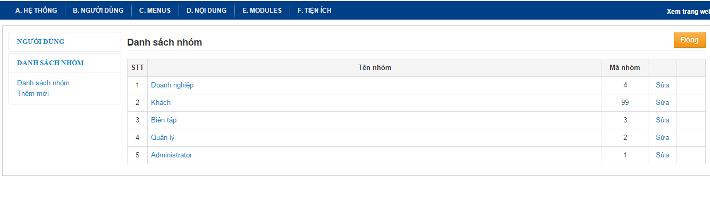
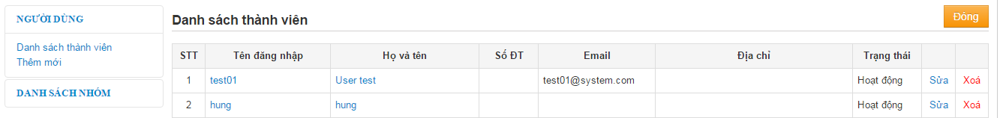
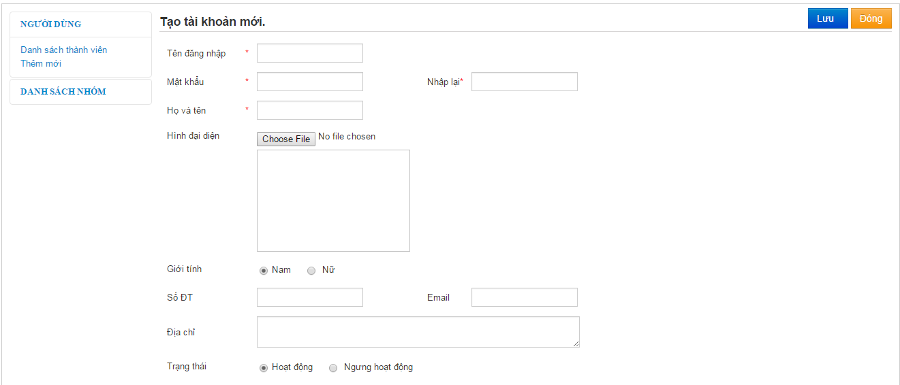

IX. Quản lý thành viên,nhóm thành viên
1. Quản lý nhóm
-
Từ màn hình quản trị và mục Thành viên -> Nhóm
Ở đây ta có danh sách các nhóm

-
Để thêm 1 nhóm mới ta chọn Thêm mới bên menu trái, Trong màn hình Thêm mới ta nhập Tên nhóm, chọn các thành viên từ danh sách các thành viên trong hệ thống và chọn nút thêm để thêm thành viên. Phía dưới là danh sách các menu, ta chọn check vào những menu mà những thành viên trong nhóm đó có quyền Xem, Tạo mới, Sửa hay Toàn quyền tùy theo lựa chọn của người quản trị. Mặc định là các thành viên có quyền Xem.
-
Sau đó nhấn Lưu để lưu lại thông tin.
2. Quản lý thành viên
-
Từ màn hình quản trị vào mục Thành Viên

-
Chọn thêm mới bên menu trái màn hình, điền đầy đủ các thông tin cần thiết như hình, những ô đánh dấu * là bắt buộc. Sau đó nhấn lưu để lưu lại thông tin.
